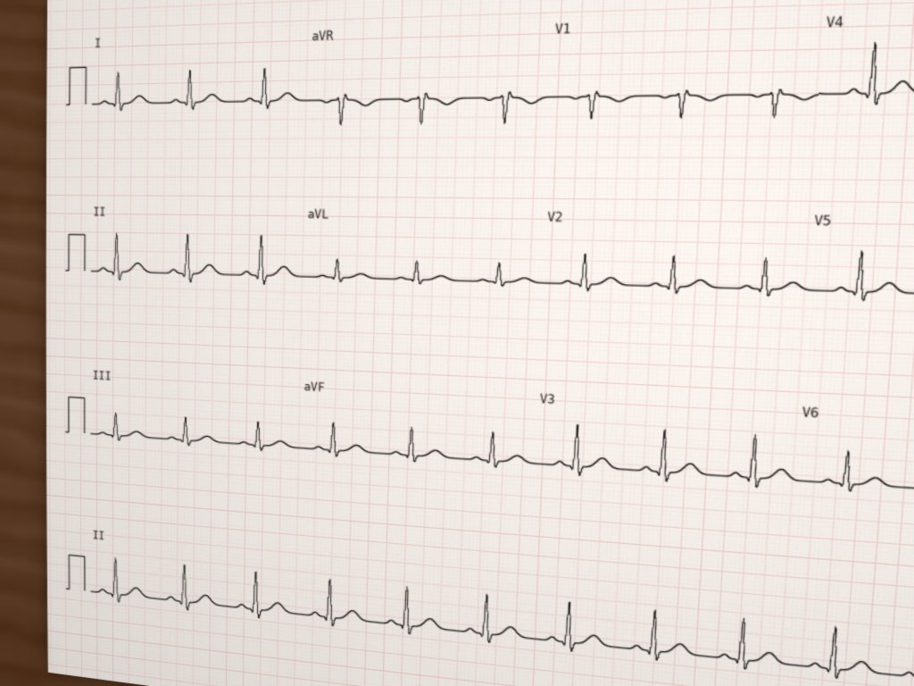
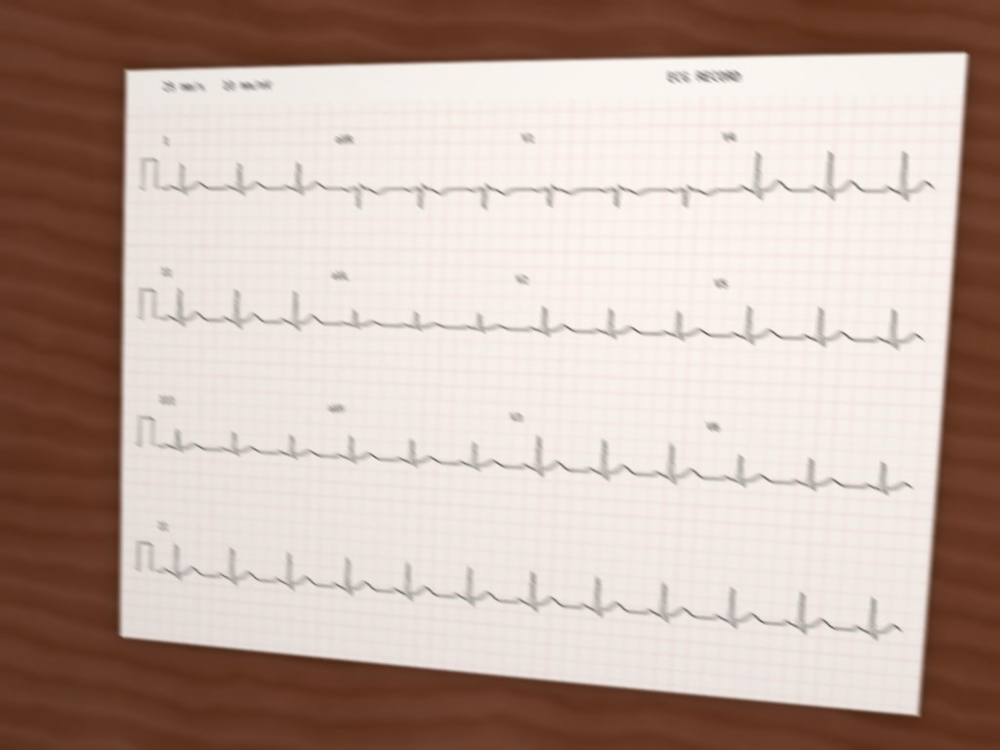
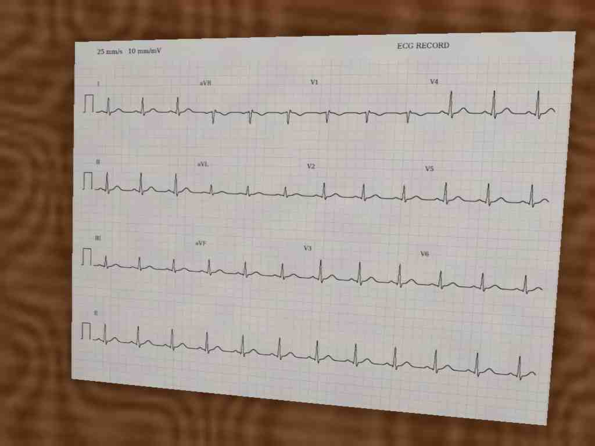
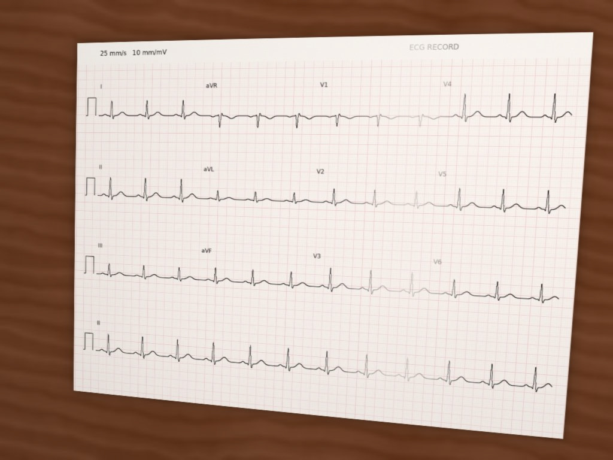
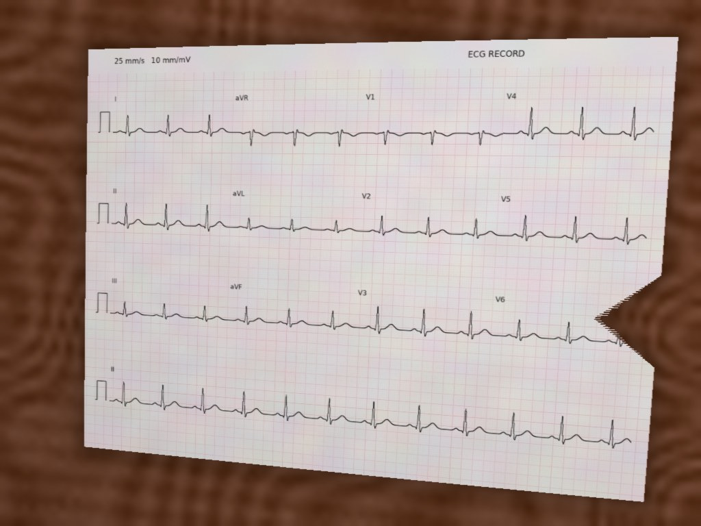

Capture & print artifacts
Printing, geometry and capture are independently configurable. Their default distributions are a starting point, then should be adapted to the images you expect to digitize.
Geometry#
Perspective, small rotations, quarter turns, zoom, translation, crops, radial lens distortion, curl and creases alter the sampling field. Targets use the same field.

render = ECGImageLayer(parameters={
"angle": Uniform(-.2, .2),
"quarter": Choice([0, 1, 2, 3]),
"perspective_x": Uniform(-.2, .2),
"perspective_y": Uniform(-.12, .12),
"radial": Uniform(-.03, .03),
})
Camera#
| Control | Effect |
|---|---|
blur |
Defocus component of the point-spread function |
motion, motion_angle |
Directional motion blur |
read_noise, shot_noise |
Additive and intensity-dependent sensor noise |
exposure, white_balance, gamma |
Tone and channel response |
vignette |
Spatial attenuation near the frame edge |
jpeg_quality, jpeg_active |
4:2:0 chroma and 8×8 DCT artifact simulation |


JPEG here is a decoded-artifact approximation implemented in Torch. It does not write an entropy-coded JPEG file. The CLI separately encodes the final image if you choose .jpg.
As of 0.6.0, motion blur integrates a finite, uniform, constant-velocity shutter
path convolved with Gaussian defocus. The normalized kernel has 9×9 pixel
support. Very large user overrides are truncated by that support. Read and
shot noise combine as variance read_noise**2 + shot_noise**2 * intensity.
This is a Gaussian sensor approximation, not an electron-counting model.
In 0.7.0 exposure, optical filtering, shot/read variance, geometric resampling,
surface lighting and compositing operate in linear light. Highlights are
retained until sensor saturation. Digital white balance follows sensor noise.
The bounded 9×9 kernel accepts blur in [0,1.1] and motion in [0,3.2] output
pixels. Larger kernels require an explicit alternative optical model.
Paper-attached pen and stamp coverage now follow the sheet's material warp.
The separate opaque rectangle remains a camera/scene occluder.
Optional local measured backgrounds can be loaded once with load_rgb_bank.
For actual 3D area-light transport and ray-visible supervision, install the
optional Mitsuba backend and use examples/pathtraced_capture.py. Its CPU
offline work is separate from rendering inside a torch training loop.
Seven coherent recipes are available through capture_scenario(name), returning
a configuration and parameter dictionary for the usual image or supervision
layer. Names are clean_print, flatbed_scan, aged_scan, phone_photo,
low_light_phone, folded_photo and damaged_archive. Scanner recipes disable
camera perspective, motion and directional scene lighting. Severity is a stress
control, not a calibrated probability of unreadability. Geometric validity
does not imply optical readability.
The existing 125-figure gallery is retained from 0.5.0. Current 0.6.0 scenario
outputs and their reproducible recipes are generated by
python examples/capture_scenarios.py --out build/scenarios and summarized in
the repository's research/SWARM_REPORT.md.
from ecg_gpu import capture_scenario, ECGSupervisionLayer
config, parameters = capture_scenario('folded_photo', severity=.8)
layer = ECGSupervisionLayer(config=config, parameters=parameters)
Paper and print#
Control ink width, color, density, thermal fading, scan bands, grid styles, grid phase, missing lead slots, label placement, fonts, unit headers, paper tint/age/noise, stains, coffee rings and reverse-side bleed.

Explicit occlusion#
Tears remove part of the paper. Opaque rectangles, procedural pen strokes and rotated artifact text cover the printed page. The valid mask accounts for these explicit visibility changes.

Shadowed or blurred pixels remain geometrically valid. Visibility does not mean the trace is readable. Keep a separate quality criterion if your application needs it.
photo=False produces a canonical page and disables the camera geometry, surface deformation and external document warps. It is useful for rectified training targets. It does not automatically remove every configured print artifact.